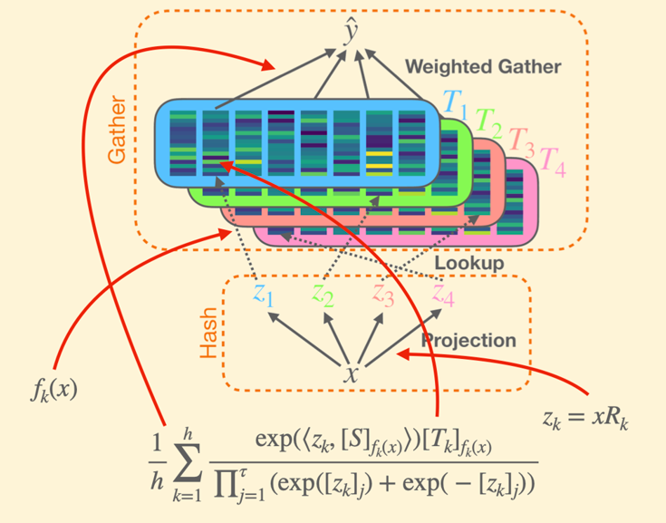

|

|
LookupFFN: Making Transformers Compute-lite for CPU inference
Zhanpeng Zeng,
Michael Davies,
Pranav Pulijala,
Karthikeyan Sankaralingam,
Vikas Singh
ICML, 2023
While GPU clusters are the de facto choice for training large deep neural network (DNN) models today, several reasons including ease of workflow, security and cost have led to efforts investigating whether CPUs may be viable for inference in routine use in many sectors of the industry. But the imbalance between the compute capabilities of GPUs and CPUs is huge. Motivated by these considerations, we study a module which is a workhorse within modern DNN architectures, GEMM based Feed Forward Networks (FFNs), and assess the extent to which it can be made compute- (or FLOP-) lite. Specifically, we propose an alternative formulation (we call it LookupFFN) to GEMM based FFNs inspired by the recent studies of using Locality Sensitive Hashing (LSH) to approximate FFNs. Our formulation recasts most essential operations as a memory look-up, leveraging the trade-off between the two resources on any platform: compute and memory (since CPUs offer it in abundance). For RoBERTa language model pretraining, our formulation achieves similar performance compared to GEMM based FFNs, while dramatically reducing the required FLOP. Our development is complemented with a detailed hardware profiling of strategies that will maximize efficiency -- not just on contemporary hardware but on products that will be offered in the near/medium term future. Code is avaiable at https://github.com/mlpen/LookupFFN.
|
{kind=link}